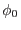
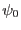
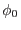
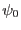

The main purpose of this task is the correction for attitude drifts using the dispersion coordinate system. The dispersion coordinates are defined based on the position and on the orientation of the RGA, and have two components: the dispersion angle BETA and the cross dispersion angle XDSP. Under the assumption that the relative movement between the RGA and the RFC is negligible (stable telescope tube), these angles can be calculated per event solely from the pixel locations of the event on the RFC and from the relative alignment of RGA and RFC. This calculation is performed by a CAL call (using the coordinate converter modes) in rgsevents, which adds BETA and XDSP to the event list. Each event is therefore associated with a position in dispersion coordinates.
The measured position of an event (BETA, XDSP) depends on the wavelength of the photon and the position of the X-ray source in the field of view (FOV) of the telescope. A drift of the telescope changes the position of the source in the FOV which results in a blurred wavelength spectrum.
While the aspect drift correction in the cross-dispersion coordinate is straightforward and similar to an imaging instrument, the approach in the dispersion direction is to absorb the aspect drift correction in the calculation of the dispersion coordinate from the RGA-RFC geometry. This approach of the drift correction is described in the following.
The following description is given in RGS FOV coordinates
( ,
, ), which relate to the angles (,) of the
TELCOORD system in the following way:
), which relate to the angles (,) of the
TELCOORD system in the following way:
| (1) |
X-rays from a source which is at angles ( ,
, )
have the following angle of
incidence
)
have the following angle of
incidence  on the gratings of the RGA:
on the gratings of the RGA:
with the nominal angle of incidence for an on-axis source ,
the focal length , and the distance between RGA and prime focus  (nominal:
,
; exact values depend
on the distances of the reference points of the RGA and of the RFC,
and are provided by the CAL.
Aspect drift is described by adding
its amount along the dispersion direction to
(nominal:
,
; exact values depend
on the distances of the reference points of the RGA and of the RFC,
and are provided by the CAL.
Aspect drift is described by adding
its amount along the dispersion direction to  . Note
that for non-negligible drift in roll, also is a function
of roll drift and source off-axis angle, because
. Note
that for non-negligible drift in roll, also is a function
of roll drift and source off-axis angle, because  and
are angles in the RGA frame (i.e. along the dispersion
direction).
and
are angles in the RGA frame (i.e. along the dispersion
direction).
From the dispersion relation
with the grating incidence angle  (measured from the grating
surface), the grating exit angle
(measured from the grating
surface), the grating exit angle  , grating line density and
order
, grating line density and
order  for a given wavelength
for a given wavelength  . It follows from
(3) for variations of
. It follows from
(3) for variations of  &
&  by
differentiation
by
differentiation
| (4) |
or
| (5) |
Using (2) and the aspect drift , this becomes
With this formulation, the drift of attitude is described as
corrections in dispersion coordinates. This effectively means that the
RFC moves in  -space and has the side effect that the same
correction has to be used for the calculation of the exposure maps.
For this reason the evaluation of these equations are part of rgslib.
-space and has the side effect that the same
correction has to be used for the calculation of the exposure maps.
For this reason the evaluation of these equations are part of rgslib.
It can also be seen from (6) that the amount of
correction of the dispersion angle is dependent in the position of the
source in the FOV (through  ). In order to achieve best possible
accuracy, this correction should be performed per source that is to be
considered in the RGS FOV. Hence the dependence on the source index in
the RGS SRCLIST table.
). In order to achieve best possible
accuracy, this correction should be performed per source that is to be
considered in the RGS FOV. Hence the dependence on the source index in
the RGS SRCLIST table.
The absolute values of  and have to be determined
for a given starting value of the pointing of the telescope. This is
called reference attitude and basically means that this is the
on-axis sky position to which the telescope points after the attitude
drift correction was performed. Different choices of reference
attitudes will cause absolute offsets of the amounts of
accordingly, and it is therefore optimal to choose a center of
reference that is close to the actual pointing.
and have to be determined
for a given starting value of the pointing of the telescope. This is
called reference attitude and basically means that this is the
on-axis sky position to which the telescope points after the attitude
drift correction was performed. Different choices of reference
attitudes will cause absolute offsets of the amounts of
accordingly, and it is therefore optimal to choose a center of
reference that is close to the actual pointing.
The reference attitude is provided by the SRCLIST table. The reference attitude is added to the EVENTS table with the keywords RA_PNT, DEC_PNT and APOS_PNT.
The source position, from which  is calculated with respect to the center
of the reference attitude, is read from the SRCLIST table, too.
The source position that is used in correction described in
equation (6) is added to the EVENTS table with the
keywords RA_OBJ and DEC_OBJ. The row number of the source in the SRCLIST table
is written to the EVENTS header with keyword SOURCEID.
is calculated with respect to the center
of the reference attitude, is read from the SRCLIST table, too.
The source position that is used in correction described in
equation (6) is added to the EVENTS table with the
keywords RA_OBJ and DEC_OBJ. The row number of the source in the SRCLIST table
is written to the EVENTS header with keyword SOURCEID.
It has been described before that  and have to be
available in instrument specific coordinates, namely along the
dispersion direction. The following steps have to be performed in
order to obtain the components of the source position along dispersion (
and have to be
available in instrument specific coordinates, namely along the
dispersion direction. The following steps have to be performed in
order to obtain the components of the source position along dispersion ( )
and cross dispersion (
)
and cross dispersion ( ) direction (implemented in
rgslib).
) direction (implemented in
rgslib).
The calculation of the components of the source position with respect to the reference attitude is performed as follows. First the reference attitude matrix is calculated from the reference pointing as specified by with
The reference attitude is multiplied by the instrument specific BoreSight matrix, such that RefAtt holds the instrument specific attitude matrix.
Next the source position (Ra,Dec) is converted to a Cartesian sky vector with
and the Cartesian position of the source for the reference attitude is obtained in the instrument specific FOV coordinates by
The angles  in the dispersion direction and
in the dispersion direction and  in the
cross-dispersion direction are obtained straightforwardly from the
Cartesian components
in the
cross-dispersion direction are obtained straightforwardly from the
Cartesian components
The calculations of equations (7)-(10)
are performed by the rgslib
function
offAxisAngles(referenceAttitude,sourcePos).
Attitude drifts cause variations (, ) to
 and
and  as calculated in equation (10) and are
calculated in instrument FOV coordinates as well as variations from
the reference pointing. First
as calculated in equation (10) and are
calculated in instrument FOV coordinates as well as variations from
the reference pointing. First  and
and  are
evaluated equivalent to the steps described above
(equations (8)-(10)), but instead of the the source
pointing the pointing of the reference attitude is used. This yields
together with
the starting values for  and  to be used for the calculation of
and .
are
evaluated equivalent to the steps described above
(equations (8)-(10)), but instead of the the source
pointing the pointing of the reference attitude is used. This yields
together with
the starting values for  and  to be used for the calculation of
and . Then
Then  and
and  are calculated for each available
attitude, and the angles of the drift (, ) are
just the differences between those obtained for the reference attitude
and the time dependent attitude. Let VarAtt be the attitude of the
instrument as a function of time, then
are calculated for each available
attitude, and the angles of the drift (, ) are
just the differences between those obtained for the reference attitude
and the time dependent attitude. Let VarAtt be the attitude of the
instrument as a function of time, then
The multiplication with the BoreSight here is necessary, as OAL_getAttitude returns the attitude of the star tracker as a function of time. Similar as above in (9), the position of the reference pointing in the (drifted) FOV in Cartesian coordinates is obtained by multiplication, and
| (12) |
and the components of the drift then follow with equation (10) according to
The calculations of equations (11)-(13)
are performed by the rgslib
function
gratingAspectAngles(time, referenceAttitude),
which returns an array holding
, and also
includes the calculation of and according to
equations (7)-(10), but for the reference
pointing. The values of
and are added to the EXPOSU0 table as columns
ASPCDSP and ASPCXDSP respectively.
table as columns
ASPCDSP and ASPCXDSP respectively.
For each event the aspect correction is calculated using equation (6). The drift independent term is written as keyword ASPFACT1 to the EVENTS header for use by task rgsexposure.
The drift corrected columns BETA_CORR XDSP_CORR are binned into int16 channel columns BETA_CHANNEL and XDSP_CHANNEL. The binning can be specified either by the number of bins together with the ranges in BETA_CORR and XDSP_CORR, or by specifying the bin-size and a reference value for the first channel. Keywords TCRVL (formerly BETA_REF, XDSP_REF) and TCDLT (formerly BETA_WID, XDSP_WID) specify the midpoint of the first bin and the bin width used for the binning. Depending on the data range and binning, channel numbers could become negative. Channel values outside the integer 16 range will cause a fatal error condition.
In order to secure against wrong values of BETA_CORR and XDSP_CORR which could arise from a bad choice of the reference attitude, a range check is performed on these values, and a warning is generated when unreasonable values are encountered.
The following optional columns can be added to the event table for investigation of the intermediate results:
Since version 4.7.2, rgsangle task is able to correct M_LAMBDA column from: